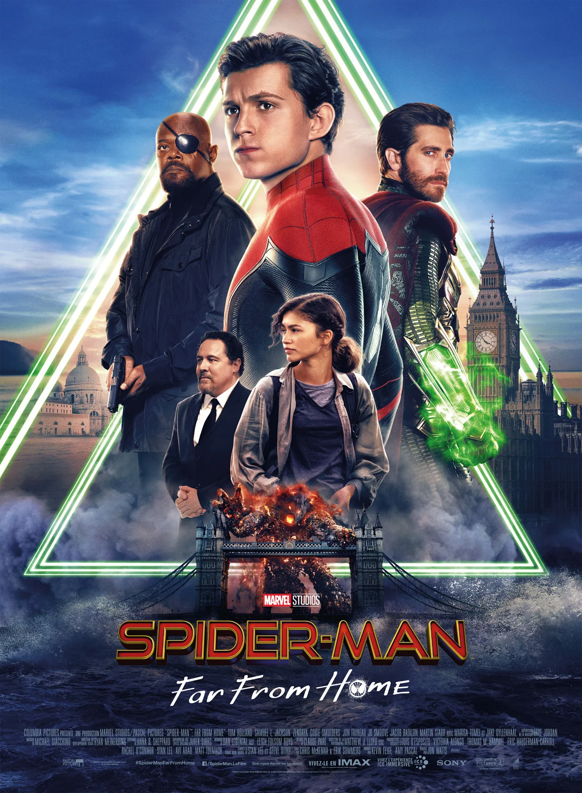
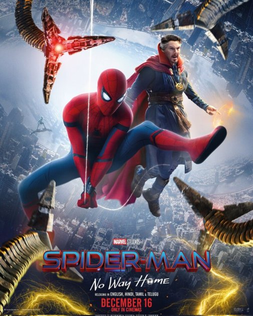

Повне ім'я -Томас Стенлі Голланд.
Дата народження -1 червня 1996.
Країна народження -Велика Британія.
Діяльність - актор театру та кіно.
Автограф:
Instagram: @tomholland2013
WikipediaТом Голланд
Повне ім'я -Томас Стенлі Голланд.
Дата народження -1 червня 1996.
Країна народження -Велика Британія.
Діяльність - актор театру та кіно.
Автограф: Голланд народився у Кінгстоні-на-Темзі, Лондон, у сім'ї фотографа Ніколи Елізабет і комедіанта та письменника Домініка Голланда. Має трьох братів, молодших на три роки близнюків Сема і Гаррі. Голланд навчався в Донхеді, римо-католицькій підготовчій школі Вімблдоні, згодом перейшов до Вімблдонського коледжу.
Свою кар'єру Том почав з танцбриста, згодом змог потрапити до театру, де дебютував в мюзиклі "Біллі Елліот" в другорядній ролі, а вже через декілька місяців мав головну роль. Кар'єра кіно почалась з озвучки британської версії аніме "Позичайка Аріетті", потім знявся у фільмі "Неможливе", а вже з 2015 року його оголосили Людиною-павуком в "Першому меснику: Протистояння"."
Голланд проживає в лондонському районі Кінгстон-на-Темзі, поблизу будинку своїх батьків та молодших братів. Він має собаку, на ім'я Тесса. Коли йому було сім років, Голланду поставили діагноз дислексія.
 Перший месник: Протистояння
Перший месник: Протистояння
 Месники: Війна некінечності
Месники: Війна некінечності
 Людина-павук: Далеко від дому
 Людина-павук: Додому шляху нема
 Дорога хаосу
Дорога хаосу